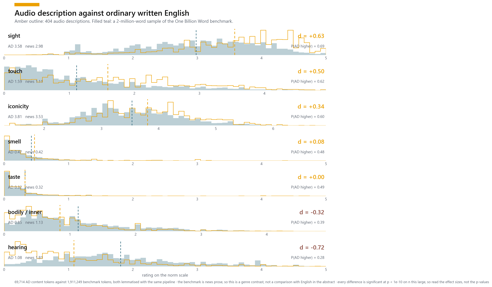
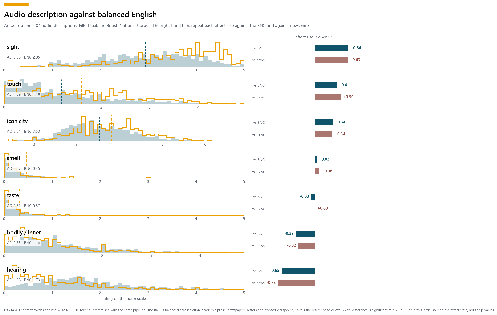

The Lancaster and Winter norms say where a word sits in the lexicon, where every word counts once. That is not where it sits in use, where a handful of common, abstract words take up most of the room. Against the lexicon, audio description is unremarkable in iconicity (d = +0.03); against running text it is clearly more iconic. The same pipeline is used throughout: spaCy lemmas, content words only, norms looked up per lemma and weighted by how often the lemma actually occurs.
News wire: a single register, so this is a genre contrast rather than a comparison with English at large.

| dimension | AD | reference | d | P(AD higher) |
|---|---|---|---|---|
| sight | 3.58 | 2.98 | +0.63 | 0.69 |
| touch | 1.59 | 1.11 | +0.50 | 0.62 |
| iconicity | 3.81 | 3.53 | +0.34 | 0.60 |
| smell | 0.47 | 0.42 | +0.08 | 0.48 |
| taste | 0.32 | 0.32 | +0.00 | 0.49 |
| bodily / inner | 0.85 | 1.13 | -0.32 | 0.39 |
| hearing | 1.08 | 1.81 | -0.72 | 0.28 |
Balanced by design — fiction, academic prose, newspapers, letters, transcribed speech — so this is the fairer reference, and the one whose effect sizes are worth quoting.

| dimension | AD | reference | d | P(AD higher) |
|---|---|---|---|---|
| sight | 3.58 | 2.95 | +0.64 | 0.69 |
| touch | 1.59 | 1.18 | +0.41 | 0.61 |
| iconicity | 3.81 | 3.53 | +0.34 | 0.60 |
| smell | 0.47 | 0.45 | +0.03 | 0.47 |
| taste | 0.32 | 0.37 | -0.08 | 0.46 |
| bodily / inner | 0.85 | 1.18 | -0.37 | 0.38 |
| hearing | 1.08 | 1.73 | -0.65 | 0.29 |